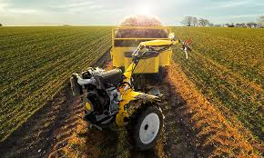

O agricultor é o profissional responsável pelo manejo dos mais diversos tipos de plantações, desde a semeadura até a colheita. Ele também cuida de animais, como vacas, ovelhas, cavalos, galinhas, porcos, entre outros animais normalmente criados na zona rural.
 link